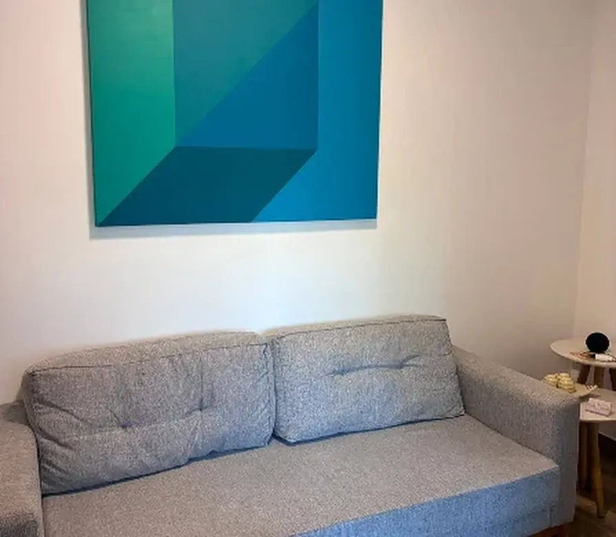

Psicologia no Jardim Orly, São Paulo
Um espaço de acolhimento e escuta para cuidar da saúde emocional e do bem-estar, para adultos e crianças.
Um espaço para falar, compreender e cuidar
A psicologia pode ser um espaço de escuta, reflexão e acolhimento, respeitando a história e o momento de cada pessoa.
Na SG Reabilitação e Bem Estar, o atendimento psicológico acontece em sala reservada, no Jardim Orly, em São Paulo. É um encontro para falar sobre o que está pesando, no seu tempo, sem que nada precise estar organizado ou explicado antes.
O atendimento é feito para adultos e crianças. No caso das crianças, a conversa com a família faz parte do processo.
Atendimento com Graziela Dias, psicologia adulto e pediátrica · [registro profissional: editar]

Como começar
O primeiro passo é uma conversa pelo WhatsApp para combinar o horário. Vale dizer, se você quiser, se o atendimento é para você ou para uma criança — isso ajuda a organizar a agenda e o tempo do primeiro encontro.
A clínica fica na Rua Monsenhor Maggi, 102, sala 3, no Jardim Orly, perto do Jardim Aeroporto e do Campo Belo. O atendimento é de segunda a sexta, das 8h às 13h, e aos sábados, das 8h às 17h.
Outros atendimentos
Fisioterapia
Atendimento fisioterapêutico personalizado, buscando auxiliar na recuperação, mobilidade, funcionalidade e qualidade de vida.
Conhecer fisioterapiaPerguntas frequentes
O que mais nos perguntam antes do primeiro atendimento.
Onde fica a clínica de psicologia?
Na Rua Monsenhor Maggi, 102, sala 3, no Jardim Orly, São Paulo - SP, CEP 04432-040.
Qual é o horário de atendimento?
De segunda a sexta, das 8h às 13h. Aos sábados, das 8h às 17h. Aos domingos a clínica não abre.
A psicologia atende crianças?
Sim. O atendimento é para adultos e crianças, com Graziela Dias.
Como marco a primeira conversa?
Pelo WhatsApp ou por telefone, no (11) 99600-7361. Há também o (11) 96127-0863 para ligações.
O atendimento é presencial ou online?
[responder: editar]
Onde ficamos
- Endereço
Rua Monsenhor Maggi, 102 - Sala 3
Jardim Orly, São Paulo - SP
04432-040 - Horário
Segunda a sexta, das 8h às 13h
Sábado, das 8h às 17h
Domingo: fechado - Telefones (11) 99600-7361 WhatsApp · (11) 96127-0863
Agende seu horário
Fale com a clínica pelo WhatsApp e combine o melhor dia para a sua primeira conversa.